GUÍA RÁPIDA

Configuración
Operaciones
- Inicializar un proyecto
- Contenido de la carpet .git
- Visualización de los cambios en GIT
- Agregar archivos al stage area (preparación)
- Eliminar archivo seguido por GIT
- Bajar y recuperar archivos del stage area
- Renombrar archivo seguido por GIT
- Ignorar archivos
- Configurar un repositorio remoto
- Eliminar el seguimiento de GIT
- Ramas
Configuración inicial
Para comenzar a personalizar aspectos básicos y avanzados de Git debemos saber del funcionamiento y como modificar su configuración predeterminada. Una herramienta inherente de Git llamada git config permite establecer y obtener variables de configuración que controlan aspectos del funcionamiento y la apariencia de Git. Estas variables se pueden almacenar en tres lugares diferentes:
-
[path]/etc/gitconfig(⚙️): Contiene los valores aplicados a cada usuario en el sistema y todos sus repositorios (si pasa la opción --system a git config, lee y escribe desde este archivo de configuración específicamente. Debido a que se trata de un archivo de configuración del sistema, se necesitaría información administrativa o privilegios de superusuario para relizar cambios. -
~/.gitconfigo~/.config/git/config(⚙️): Contiene valores específicos personalmente para el usuario. Puedes hacer que Git lea y escriba en este archivo específicamente al pasar la opción --global, y esto afecta todos los repositorios con los que trabaja en el sistema del usuario. -
.git/config(⚙️): Específico para ese único repositorio. Puede obligar a Git a leer y escribir en este archivo con la opción --local, pero de hecho es la predeterminada. Como era de esperar, necesita estar ubicado en algún lugar de un repositorio de Git para que esta opción funcione correctamente.
Cada nivel anula los valores del nivel anterior, por lo que los valores en .git/config superan a los de [path]/etc/gitconfig.
Puede ver todas sus configuraciones y de dónde provienen indicando el siguiente comando:
git config --list --show-origin
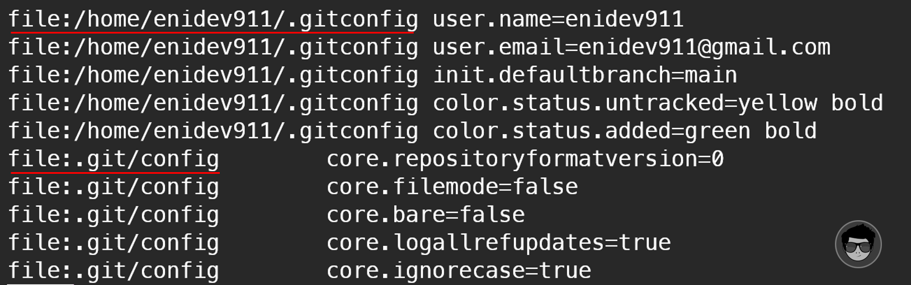
Configuración de identidad⚓
Después de instalar Git, los usuarios deben establecer inmediatamente el nombre de usuario y la dirección de correo eléctronico, que se usarán para cada confirmación de Git.
Configurar el nombre de usuario
git config --global user.name "nombre de usuario"
Configurar el email para el usuario
git config --global user.email "usuario@correo.com"
Clic ver demo
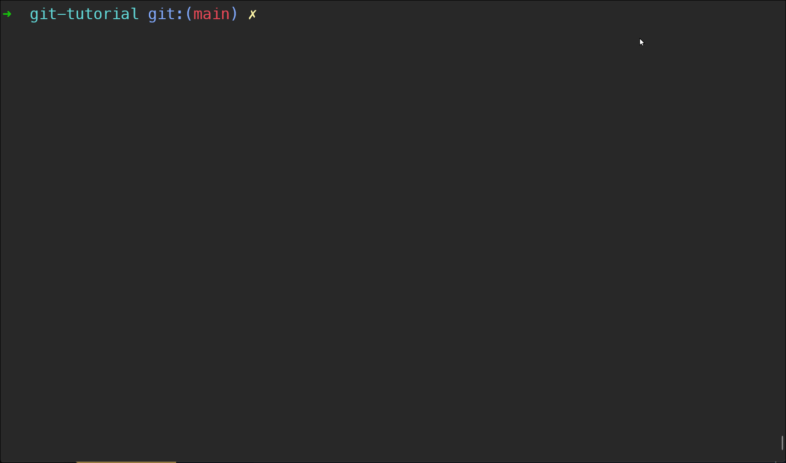
Configurar editor⚓
Configurar VS code como el editor por defecto para git
git config --global core.editor "code --wait"
La opción
--waites para que la terminal se quede esperando hasta que cerremos el editor de texto.
Ver el archivo de configuración con el editor por defecto
git config --global -e
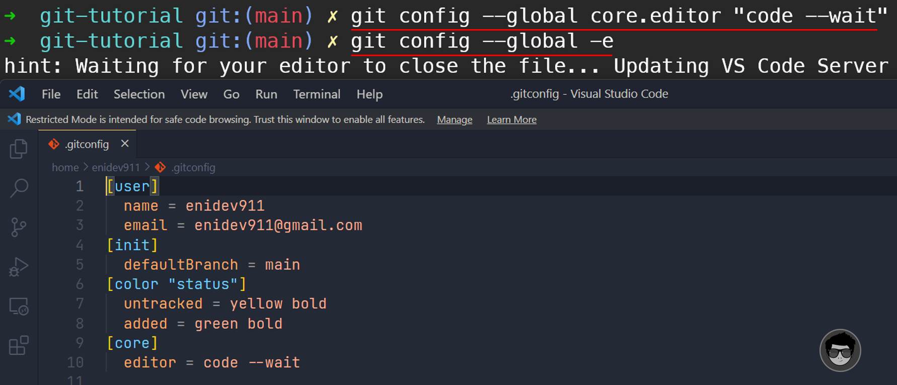
La propiedad autocrlf para git⚓
Para Windows
Si estás editando archivos en Windows o utilizando algún otro sistema, pero colaborando con más gente que usa Windows. Es muy posible que alguna vez nos topemos con problemas de finales de línea. Esto se debe a que Windows utiliza retorno de carro y salto de línea para marcar los finales de línea de sus archivos. Mientras qie Mac y Linux utilizan solamente el carácter de salto de línea.
Git lo maneja convertiendo automáticamente los finales CRLF en LF al hacer confirmaciones de cambios ( commit ); y, viceversa, al extraer código ( checkout ) a la carpeta de trabajo. Se puede activar esta funcionalidad con el parámetro core.autocrlf. Si estás en una máquina con Windows, ajustalo a true, para convertir finales LF en CRLF cuando se extrae código, lo podemos indicar de la siguiente forma ejecutando el comando:
git config --global core.autocrlf true
Para Mac o Linux
Si estás en una máquina con Linux o Mac, entonces no nos interesa convertir automáticamente los finales de línea al extraer código, sino que interesa arreglar los posibles CRLF que pudieran aparecer accidentalmente. Le podemos indicar a Git que convierta CRLF en LF al confirmar cambios ( commit ), pero no en sentido inverso, lo podemos indicar de la siguiente forma:
git config --global core.autocrlf input
Colores
Git puede marcar con colores los resultados que se muestran en la terminal, ayudándote así a leerlos más fácilmente. Los siguientes parámetros se pueden modificar:
color.ui
Git coloreará automáticamente la mayor parte de los resultados que muestra. Podemos ajustar con precisión cada una de las partes a colorear; pero si deseas activar de un golpe todos los colores por defecto, sólo debemos cambiar a “true” el parámetro ui.color”.
Para desactivar totalmente los colores:
git config --global color.ui false
El valor predeterminado es auto.
color.*
Cuando se requiere ajustar específicamente, comando a comando, donde colorear y cómo colorear, podemos emplear los ajustes particulares de color. Cada uno de ellos se puede fijar en true, false o always:
color.branch
color.diff
color.interactive
color.status
Si no quieres usar el coloreado en el comando status por ejemplo, puedes indicar:
git config --global color.status false
Además, cada uno de los comandos tiene parámetros adicionales para asignar colores a partes específicas, por si quieres precisar aún más.
Podemos ajustar a cualquiera de los siguientes colores:
black(⬛)red(🔴)green(🍏)yellow(💛)blue(🔷)magenta(💜)cyan(💧)white(⬜)
También se pueden aplicar atributos como:
bold(negrita)dim(tenue)ul(subrayado)blink(parpadeante)reverse(inverso)
Por ejemplo, para mostrar la meta-información del comando diff con letra color cian y con caracteres
en negrita, podemos indicar:
git config --global color.diff.meta "cyan bold"
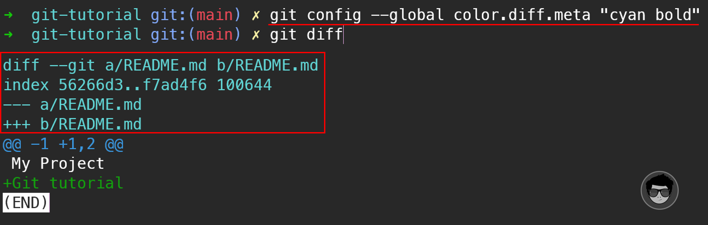
Otro ejemplo para cambiar los colores del comando status para la salida de color.status.changed (cuando un archivo a cambiado de estado), color.status.untracked (cuando un archivo no es seguido por git) y color.status.added (cuando un archivo es agregado al 'stage area'):
git config --global color.status.changed "white red bold"
git config --global color.status.untracked "white magenta bold"
git config --global color.status.added "white green bold"
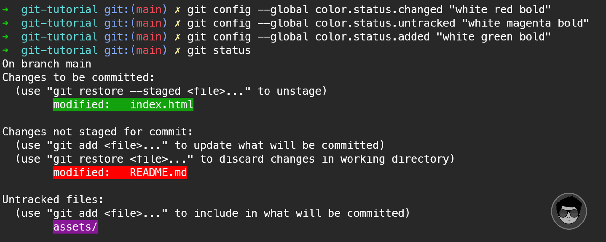
Recordemos que cualquier mensaje de un comando de git se puede controlar mediante el archivo
.gitconfig. Podemos abrir el archivo con el comando git config --global -e y
podemos
indicar colores usando el siguiente formato:
[color "branch"]
current = black green dim
local = yellow
remote = magenta
[color "diff"]
meta = yellow bold
frag = magenta bold
old = red bold
new = green bold
commit = yellow bold
[color "status"]
added = black green bold dim
changed = black red bold dim
untracked = black yellow bold
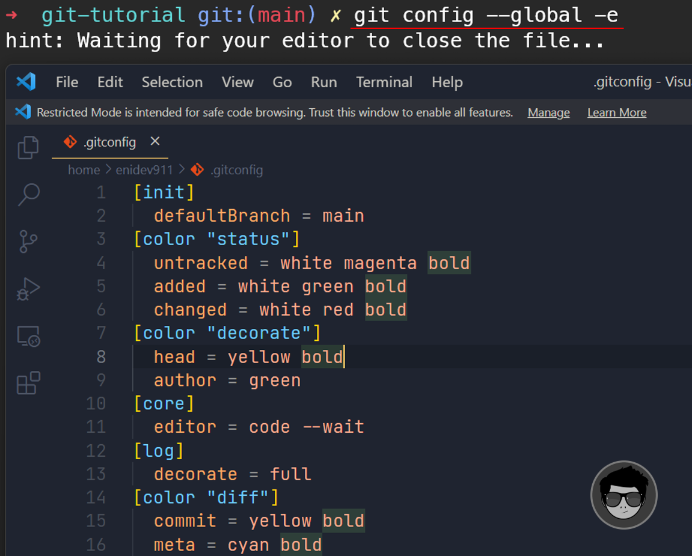
ALIAS⚓
La herramienta config también nos permite establecer alias que nos sirven principalmente para ahorrarnos un poco la escritura de comandos más largos. Aquí te dejo algunos ejemplos:
branch
git config --global alias.br branch
checkout
git config --global alias.co checkout
commit
git config --global alias.ci commit
status
git config --global alias.st status
remote
git config --global alias.rt remote
Clic ver demo
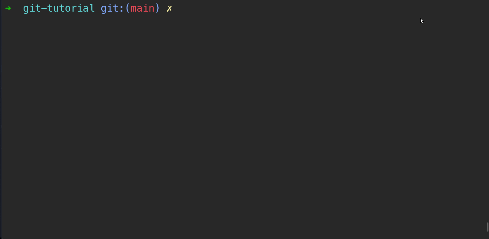
Rama por defecto⚓
Por defecto, Git creará una rama llamada master cuando crees un nuevo repositorio con
git init.
Desde la versión 2.28 de Git en adelante, puede establecer un nombre diferente para la rama inicial.
Para configurar main como el nombre de rama predeterminado, podemos indicar lo siguiente:
git config --global init.defaultBranch main
Incializar un proyecto con git⚓
Para iniciar un proyecto en Git, primera debemos situarnos en el directorio donde tendrás tu proyecto o podemos crear en este caso una carpeta y entrar en ella y partir desde cero. Si estás Windows, Mac o Linux podemos crear una carpeta con el comando mkdir y luego entrar en ella con el comando cd
Crear una carpeta para contener el proyecto y accedemos a esa carpeta
mkdir git-tutorial && cd git-tutorial
Inicializar un repositorio en local con git en el directorio actual
git init
Crear un nuevo repositorio en local con el nombre especificado (crea la carpeta y dentro el repositorio local)
git init tutorial-git
Clic ver demo
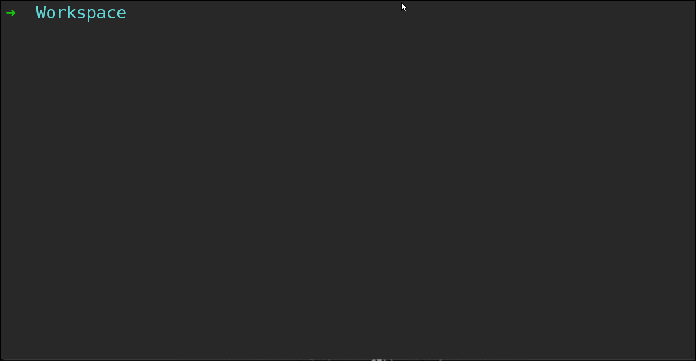
Contenido de la carpeta .git⚓
📂 .git
├── 📂 branches
├── ⚙️ config # contiene las opciones de configuración de este repositorio
├── 📄 description
├── 📄 HEAD # contiene la referencia del commit a partir del cual se trabaja
├── 📂 hooks # contiene los script que se ejecutan en determinado momento
│ ├── 📄 applypatch-msg.sample
│ ├── 📄 commit-msg.sample
│ ├── 📄 fsmonitor-watchman.sample
│ ├── 📄 post-update.sample
│ ├── 📄 pre-applypatch.sample
│ ├── 📄 pre-commit.sample
│ ├── 📄 pre-merge-commit.sample
│ ├── 📄 pre-push.sample
│ ├── 📄 pre-rebase.sample
│ ├── 📄 pre-receive.sample
│ ├── 📄 prepare-commit-msg.sample
│ ├── 📄 push-to-checkout.sample
│ └── 📄 update.sample
├── 📄 index # el área "staging" tiene la información de los archivos que se incluirán en el "commit"
├── 📂 info # relativamente sin importancia contiene el archivo exclude
│ └── 📄 exclude # se puede usa para ignorar archivos en este proyecto (no está versionado como .gitignore)
├── 📂 logs # contiene el historial de las distintas ramas (interactivo con el comando log, reflog)
│ ├── 📄 HEAD
│ └── 📂 refs
│ └── 📂 heads
│ └── 📄 main
├── 📂 objects # el depósito interno de objetos, indexados por SHAs
│ ├── 📄 info
│ └── 📄 pack
└── 📂 refs # La copia maestra de todos los refs que existen en el repositorio, ya sean stashes, tags, etc.
├── 📂 heads
│ └── 📄 main
└── 📂 tags
Visualización de los cambios en los archivos⚓
STATUS
El comando status muestra las rutas que tienen diferencias entre el archivo de índice y la confirmación HEAD actual, las rutas que tienen diferencias entre el árbol de trabajo y el archivo de índice, y las rutas en el árbol de trabajo que no son rastreadas por Git (y no son ignoradas con archivos .gitinore).
git status
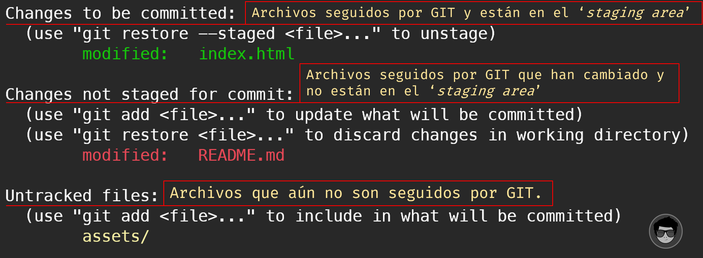
SHORT STATUS
Si bien la salida de estado de git es bastante completa, también es bastante prolija. Git también tiene un indicador corto de estado para que pueda ver sus cambios de una manera más compacta. Si ejecuta git status -s o git status --short en resumen, obtiene una salida mucho más simplificada del comando.
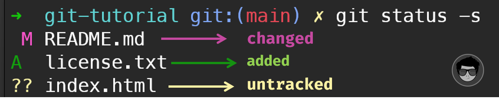
Agregar archivos a preparación
El staging o área de preparación es un lugar donde se guardan temporalmente los cambios, para luego en caso de ser confirmados serán llevados definitivamente al repositorio. Sabemos que el repositorio es el lugar donde se guardan todos los registros de los cambios realizados a los archivos.
El área del staging se puede considerar como el limbo donde los archivos están esperando por ser enviados al repositorio o ser regresado a la carpeta del proyecto.
Agregar un archivo al stage area
git add archivo.txt
Agregar más de un archivo al stage area
git add archivo1.txt archivo2.txt
Agregar todos los archivos que terminan con la misma extensión
git add *.txt
Agregar todos los archivos al stage area
git add .
Agregar archivos de forma interactiva
git add -i
Clic ver demo
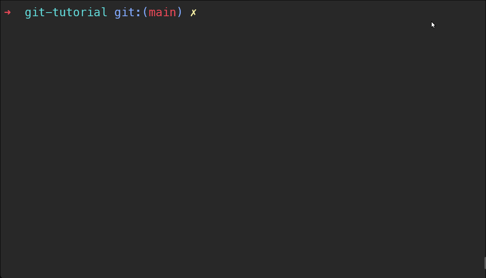
Eliminar archivos seguidos por git⚓
Eliminar un archivo primera forma
rm archivo.txt
git add archivo.txt
git commit -m 'archivo eliminado'
Eliminar un archivo segunda forma
git rm archivo.txt
git commit -m 'archivo eliminado'
Clic ver demo
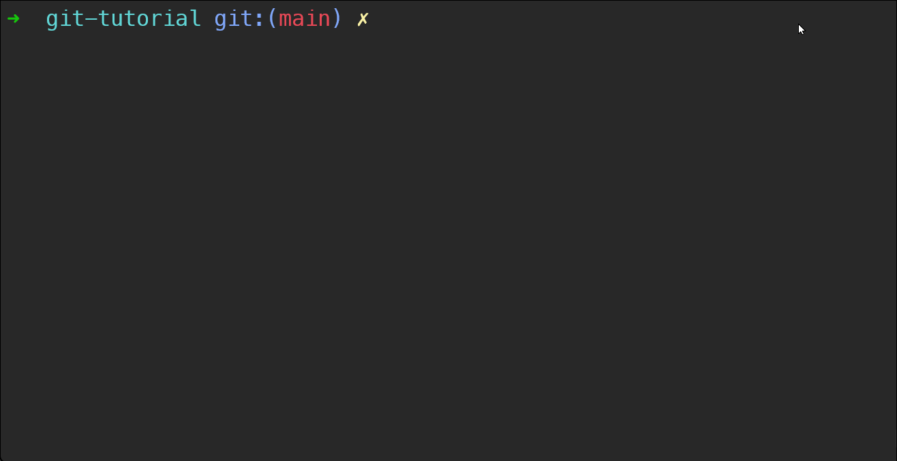
Bajar y recuperar archivos del stage area⚓
Sacar un archivo del stage area
git rm --cached archivo.txt
Recuperar un archivo, descartando los cambios
git restore archivo.txt
Clic ver demo
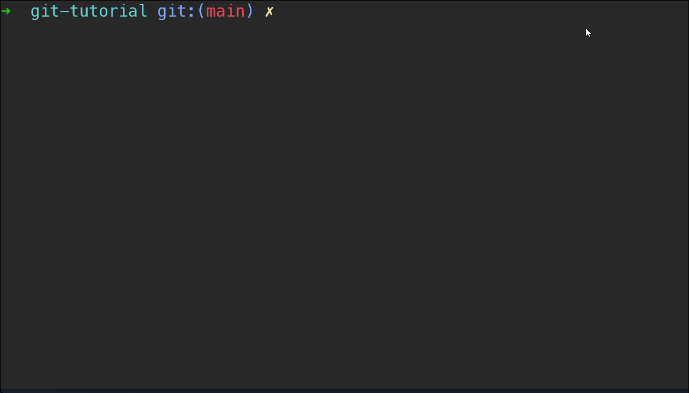
Renombrar archivos
Cuando renombramos un archivo en nuestra copia de trabajo directamente, Git considera esta operación como dos operaciones, la primera es borrar los archivos con el nombre antiguo y el nuevo, y la segunda es añadir el archivo recién nombrado al 'stage area' o área de preparación.
Cambiar nombre a un archivo primera forma
mv archivo1.txt archivo.txt
git status
git add archivo1.txt archivo.txt
git commit -m 'renombrando archivo'
El inconveniente de la operación anterior es que rompe el historial de revisiones del archivo, y no podría obtener el historial de revisiones de este archivo recién nombrado antes de este momento de renombramiento. No es deseable en el control de versiones.
Cambiar nombre a un archivo segunda forma (recomendado)
Git tiene un comando para renombrar archivos y resolver el problema anterior de enlazamiento roto.
git mv archivo1.txt archivo.txt
git commit -m 'archivo renombrado'
Ver los cambios realizados antes de añadir al stage area:
git diff
Ver los cambios realizados estando añadido el archivo al astage area:
git diff --staged
Configurar repositorio remoto⚓
Si has iniciado un repositorio local con git init, entonces no tendrás ningún repositorio remoto al
cual enviar los cambios realizados. Un patrón común a la hora de iniciar un nuevo repositorio es ir a un servicio
como Github o Gitlab y tener creado un repositorio para obtener la URL.
Agregar un remoto:
git remote add origin <URL>
Eliminar origen remoto:
git remote remove origin
Clic ver demo
En el ejemplo uso la herramienta de gh cli,
para crear un nuevo repositorio en github.
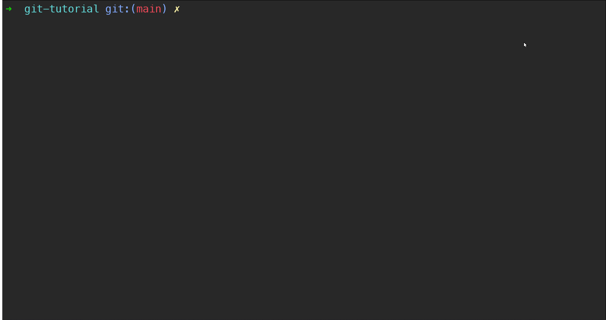
Eliminar el seguimiento de GIT⚓
Si por error inicilizamos un repositorio local en un directorio que no era simplemente eliminamos la carpeta oculta .git, por medio del siguiente comando:
rm -rf .git
Este comando rm se utiliza para remover directorios con todo su contenido dentro,
siempre y cuando se utilice el flag -r y podemos indicar que se lleve a cabo a la fuerza por medio
del flag -f de esta manera no nos solicitará confirmaciones.
Clic ver demo
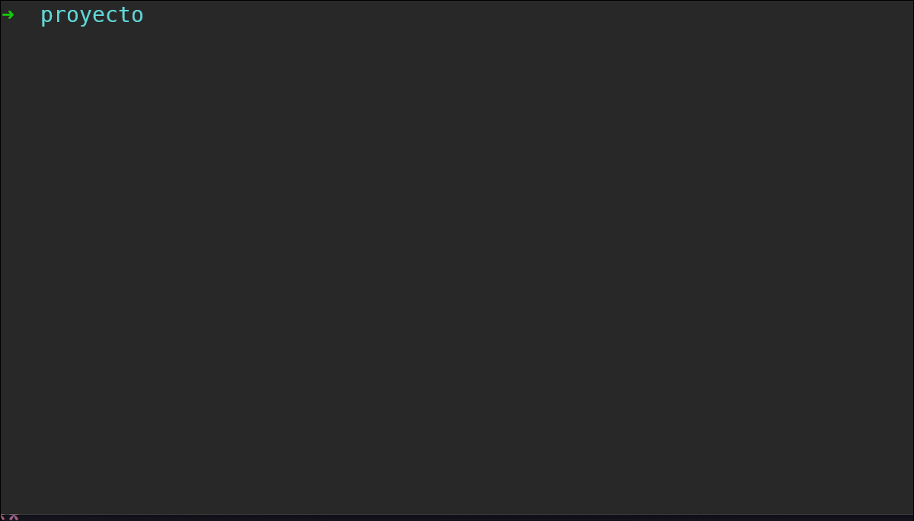
Ignorar archivos
A menudo, necesitaremos que cierta clase de archivos no sean monitoreados por Git. Por lo general, se trata de archivos generados automáticamente, como archivos de registro o archivos producidos por un sistema de compilación. En tales casos, Git nos permite crear un archivo .gitignore donde podemos definir una lista de patrones que nos sirvan para ignorar todo tipo de archivos o directorio que coincidan con ellos.
El archivo .gitignore, es un archivo de texto que le dice a Git qué archivos o carpetas ignorar en un proyecto.
Un archivo .gitignore generalmente se coloca en el directorio raíz de un proyecto. También puedes crear un archivo .gitignore global, y cualquier entrada en ese archivo se ingorará en todos tus repositorios de Git.
Cada entrada en este archivo es una regla o patrón para ignorar archivos o directorios, veamos algunos ejemplos:
# ignora todos los archivos con extensión .a
*.a
# ignora todos los archivos dentro de la carpeta TODO
# pero no en los subdirectorio
/TODO
# ignora todos los archivos en cualquier directorio llamado build
build/
# ignora doc/notas.txt, pero no ignora doc/semana2/notas.txt
doc/*.txt
# ignorar todos los archivos .pdf en el directorio doc/ y cualquiera de sus subdirectorios
doc/**/*.pdf
En el siguiente repositorio podemos encontrar una colección de plantillas para archivis
.gitignore
Cada línea de un archivo .gitignore especifica un patrón. Al decidir si ignorar una ruta, Git normalmente verifica los patrones de gitignore de múltiples fuentes, con el siguiente orden de procedencia, de mayor a menor (dentro de un nivel de precedencia, el último patrón coincidente decide el resultado).
Ramas
Las ramas son una división del estado del código, esto permite crear nuevos caminos a favor de la evolución del código y desarrollo del software. En la práctica ramificar nuestro proyecto es es algo común para poder trabajar sobre una funcionalidad en la que sabemos que nos va a ocupar varios días y posiblemente sea algo experimental, que no sabemos si cuya funcionalidad vamos a incorporar. Existen muchas razones en las que un proyecto tanto a nivel personal o de un equipo deben crear nuevas ramas en su evolución.
Crear una rama nueva
El procedimiento para crear una nueva rama es sencillo. Usando el comando branch, seguido del nombre de la rama.
git branch nueva
Este comando en sí no produce ninguna salida, pero podrías ver las “branches” de un proyecto con el comando “git branch”
Mostrar ramas y sus commits
Para obtener una descripción más detallada de las ramas usamos el comando git show-branch
git show-branch
Esto nos muestra todas las ramas del proyecto con sus commits realizados:
* [gh-pages~19] modificado index.html
* [gh-pages~20] actualizada la función
*+ [main] deployPasar de una rama a otra
Para moverse entre las diferentes ramas tenemos el comando checkout que le debemos indicar el nombre de la rama que queremos que sea la activa.
git checkout nueva
Esta sencilla instrucción tiene mucha potencia, porque nos cambiará automáticamente todos los archivos de nuestro proyecto, los de todas las carpetas, para que tenga el contenido actual de la rama correspondiente. (Es divertido a la vez, ver como se mueven los archivos como por arte de magia)
Crear nuevas ramas y moverse en un solo comando
El comando checkout tiene la posibilidad de crear una rama nueva y moverte a ella en un único paso. Para crear una nueva rama y situarte sobre ella tendrás que darle un nombre y usar el flag -b.
git checkout -b otrarama
Como salida veremos el mensaje “Switched to a otrarama”. El proyecto puede tener varios estados en un momento dado y tú podrás moverte de uno a otro con total libertad y sin tener que cambiar de carpeta ni nada parecido.
Fusionar ramas
A medidas que creamos ramas y cambiamos el estado de los directorios o archivos del proyecto empezará a divergir de una rama a otra. Llegará el momento en el que tengamos que fusionar ramas para poder incorporar el trabajo realizado a la rama master.
El proceso de fusionado se conoce como “merge” y puede llegar a ser muy simple o más complejo si se encuentran cambios que GIT no pueda procesar de manera automática. Git para procesar el merge usa un antecesor común y comprueba los cambios que se han introducido al proyecto desde entonces, combinando el código de ambas ramas.
Para hacer un merge nos situamos en una rama, en este caso la “master”, y decimos con qué otra rama se debe fusionar el código.
El siguiente comando, lanzado desde la rama “master”, permite fusionarla con la rama “nueva”.
git merge nueva
git merge nueva -m "Esto es un merge con mensaje"
Borrar ramas
Borrar rama local
git branch -d localBranchName
Borrar rama remota
git push origin --delete remoteBranchName
Descargar una rama desde el repositorio remoto
Clonamos el proyecto
git clone URL/repo.git NombreProyecto
Creamos un nuevo branch localmente, basado en el branch remoto
git checkout -b nombre_branch origin/nombre_branch